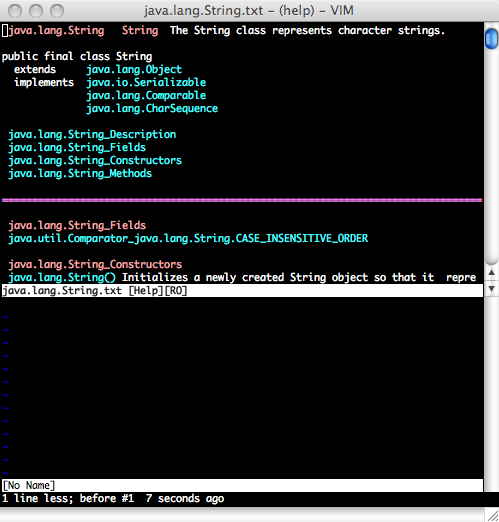
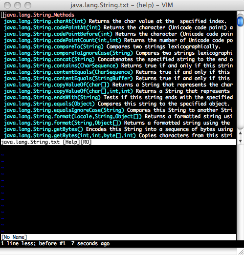
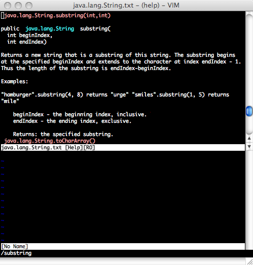

The Vim Doclet is a Doclet for Java 1.4 and above that generates documentation in the VIM Help File format. This format is a very rudimentary form of hypertext and allows a vim user to call up the documentation on a Java class in the same manner as searching the VIM help. This allows the developer to read documentation without exiting VIM.
Before installing and running, go to the files section and download the sample zip. Unzip this and follow the instructions in README.txt. Once you've done that, you can try out the javadoc in vim via :help String. This will bring up the documentation for java.lang.String. The sample includes the JDK6 version of the java.lang and java.util packages.

Download the latest distribution at the SourceForge project page. The distribution contains both source and binary (it's only one source file). As this is a custom doclet, installation is largely just putting the vimdoclet.jar into your classpath before running javadoc. How you do this depends highly on your development environment.
The doclet takes two parameters, one of which is required:
outputDir - This is the location of a directory that should contain the generated documentation. You may want to put this to a temp directory first, however if you set this to ~/.vim/doc this would be the easiest way to make the documentation available to vim
lineLength - This defaults to 80 and specifies the number of characters per line for the documentation. You can use this to increase the size of your documentation if you know you will be using vim in a particular size.
Aside from simply configuration javadoc to use this doclet, you also need source to run it on. The most useful source is the source code for Java itself. Fortunately, this is available from Sun here (click on "Latest JDK 6 Source Snapshots"). Once you download this, extract it somewhere and have your javadoc point to that (though you will need to point it to j2se/src/share/classes unless you want a ton of superfluous classes documented).
The run.xml file included in the distribution has a target called run that will run the doclet on java source code. It is set up assuming you are running on the JDK source, as it will skip certain superfluous classes and delete the documentation for java.awt.List (see below). To use it, specify two parameters on the command line to ant as properties:
vimdoclet.source.root - This is the root of the source, presumably the JDK. If you downloaded the JDK source, you should point this to $JDK_SOURCE_ROOT/j2se/src/share/classes as the JDK source package contains a lot more than what you probably want to documentvimdoclet.outputDir - This is the outputDir command line to the doclet and is where the generated source will goOnce you've generated the documentation, you need to generate Vim's tag index. If you've put your documents in ~/.vim/doc, you can just do :helptags ~/.vim/doc from within vim and, after a very long time of indexing your documentation is ready for use. Try it by doing :help String in vim.
If you've never used the vim help browser, highlighted text typically represents hyperlinks that can be followed by ^] (control and right bracket). You can navigate "back" via ^T (control and T).
See the vim documentation for further ways in which you can streamline your experience.
The main issue you may find with this documentation is in the way Vim handles classes with the same name (e.g. java.util.Date vs java.sql.Date). Basically, it doesn't. If you do :help Date you will always go to java.sql.Date. You can to help java.util.Date, however vim doesn't know which Date you need to lookup without the entire package.
I find it useful to remove the documentation for java.awt.List because I almost never need it and find the documentation for java.util.List much more useful.
The source is freely available via the Gnu GPL and can be retrieved via Git at GitHub
 